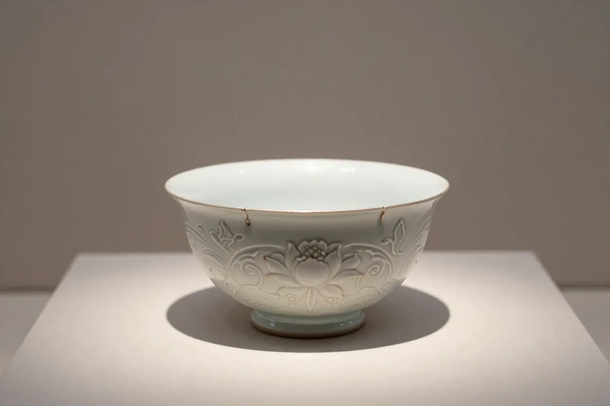

керамика · 960–1279 · также: Динъяо, Белый фарфор Северной Сун, Посуда Дин
Тонкий фарфор цвета слоновой кости при дворе Северной Сун. Гончары Дина режут или формуют тонкие растительные рисунки под прозрачной глазурью и обжигают чаши венчиком вниз, поэтому голый венчик оковывают металлом.

Главная идея
Достаточно белого черепка и прозрачной глазури цвета слоновой кости: красота в тонкой стенке, резной линии и тихом тоне.
Принципы дизайна
Вытачивайте чашу со стенкой 2–3 мм и обтачивайте снаружи до тонкого профиля.
Режьте рисунок на кожетвёрдом черепке гребёнкой или ножом, линиями 1–2 мм.
Вдавливайте формованный рисунок пиона, лотоса или рыбы внутрь блюда для чёткого рельефа.
Покрывайте вещь прозрачной глазурью со следом железа, чтобы она обжигалась в белый цвет слоновой кости.
Ставьте чашу венчиком вниз на кольцевую опору, чтобы обжечь много вещей в одной печи.
Оставляйте венчик голым после обжига и оковывайте полосой серебра или меди.
Допускайте несколько слезообразных подтёков глазури снаружи; это метка печи.